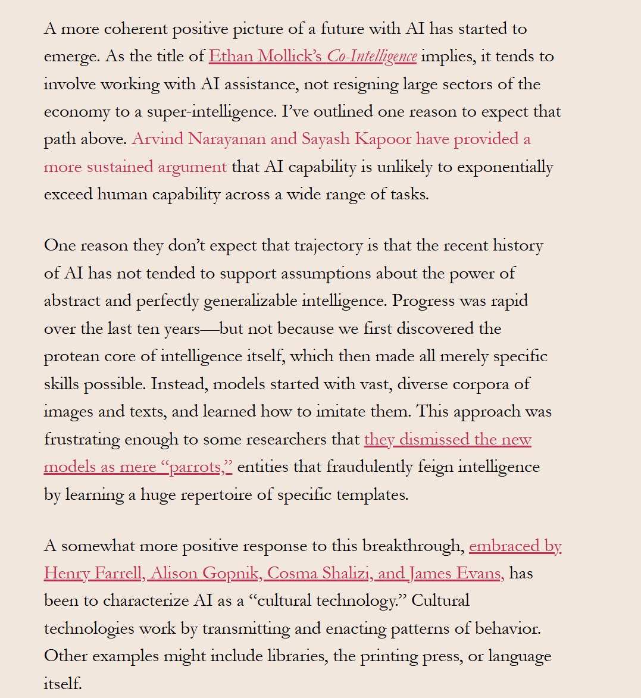
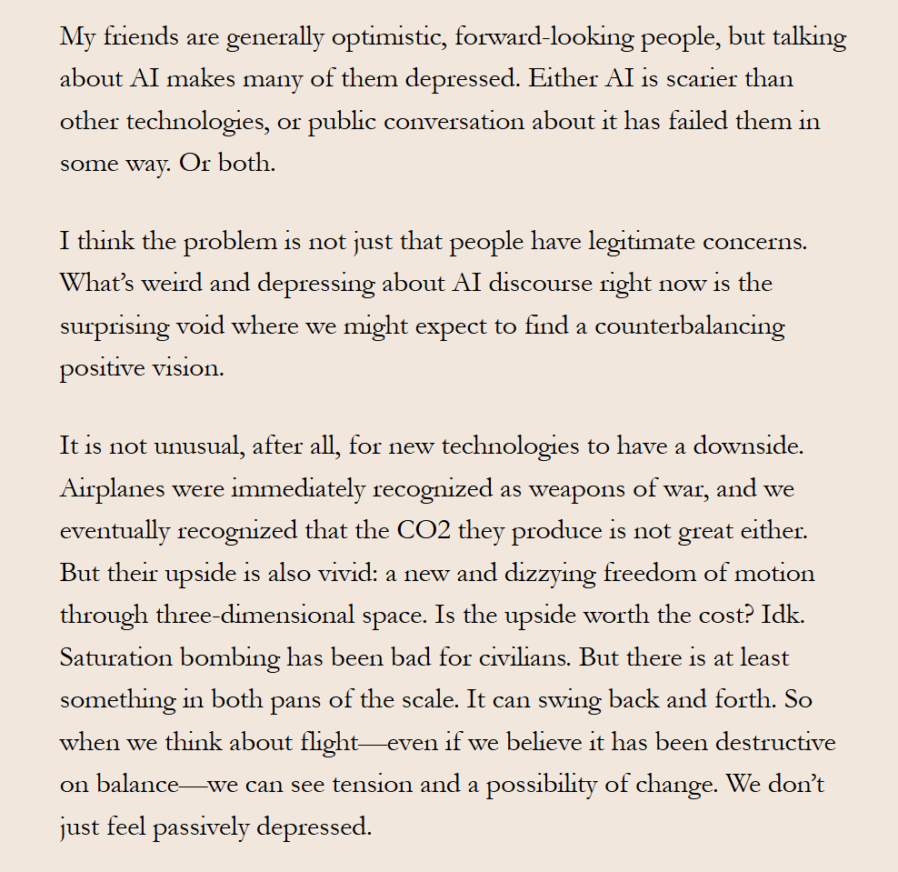

Ghosts
Week Two: Ghosts — Generation
[ ENG 6806 // FALL 2026 // WEEK OF AUGUST 31, 2026 ]


In order to explain how large language models like ChatGPT work, we can star with earlier, simpler language models. This technology goes back to the 1940s, when Claude Shannon, building on even earlier work by Andrey Markov, proposed the first “n-gram” language models (“n” here stands for a number and “gram” is a word)…These simple n-gram language models already have uses. For example, they were a key component of the T9 system for texting on early cell phones…simple n-gram models were also used to rank possible corrections in simple spell-check algorithms and served as a component of automatic transcription and machine translation systems.
The AI Con – pg 24
A neural net is “trained” by giving it some (usually random) initial set of weights on the connections between the perceptrons and then repeatedly comparing its output to the labels given in the training data. Each time the system is wrong, the weights in the network are adjusted slightly to make it closer to right…The next step towards creating ChatGPT and similar language model-driven chatbots involved taking technology designed for classification and turning it inside out: rather than classifying different strings as more or less likely, a generative language model is designed to pick a likely word given some input, take the initial input plus that word as the next input, pick another next likely word, and so on.
The AI Con – pg 26-27
Though the most basic and fundamental use of language is in face-to-face communication, once we have acquired a linguistic system, we can use it to understand linguistic artifacts even in the absence of co-situatedness, at a distance of space and even time. But we still apply the same techniques of imagining the mind behind the text, constructing model of common ground with the author, and seeking to guess what the author might have been using the words to get their audience to understand.Language models, problematically, have no subjectivity with which to perform intersubjectivity…there is no mind there, and we need to be conscientious to let go of that imaginary mind that we have constructed.
The AI Con – pg 30
General intelligence is not something that can be measured, but the force of such a promise has been used to justify racial, gender, and class inequality for more than a century. The paradigm of describing “AI” systems as having “humanlike intelligence” or achieving greater-than-human “superintelligence” rests on this same conception of “intelligence” as a measurable quantity by which people (and machines) can be ranked.
The AI Con – pg 36
Readings: moved into this week for 2026
I’m saving the image discussions for next week, and focusing on the ethics section this week
from the 2025 Week 4 deck — Mitchell part now assigned in Week 2 [vision: Cover of Melanie Mitchell's AI: A Guide for Thinking Humans]
from the 2025 Week 4 deck — Mitchell part now assigned in Week 2 [vision: Quote on trustworthy decision makers, machine learning ethics]
from the 2025 Week 4 deck — Mitchell part now assigned in Week 2 [vision: Quote referencing superintelligence discussion in 'final chapter']